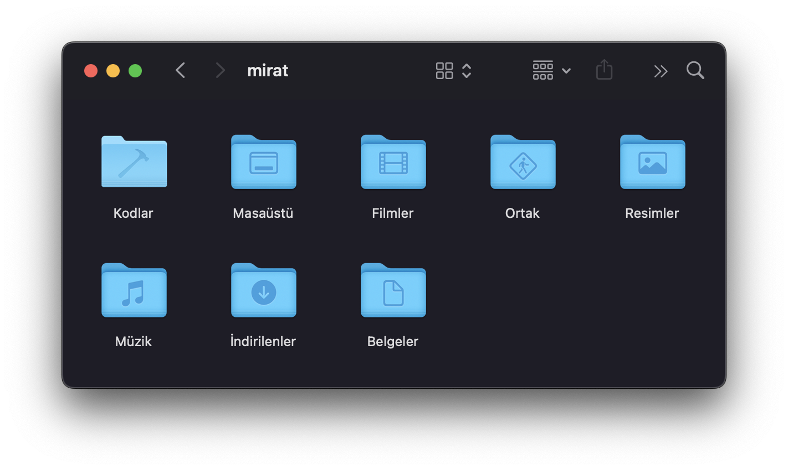
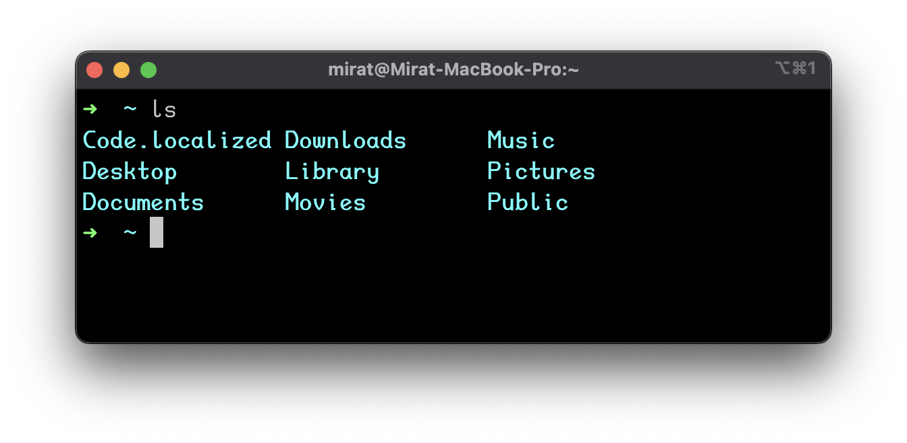
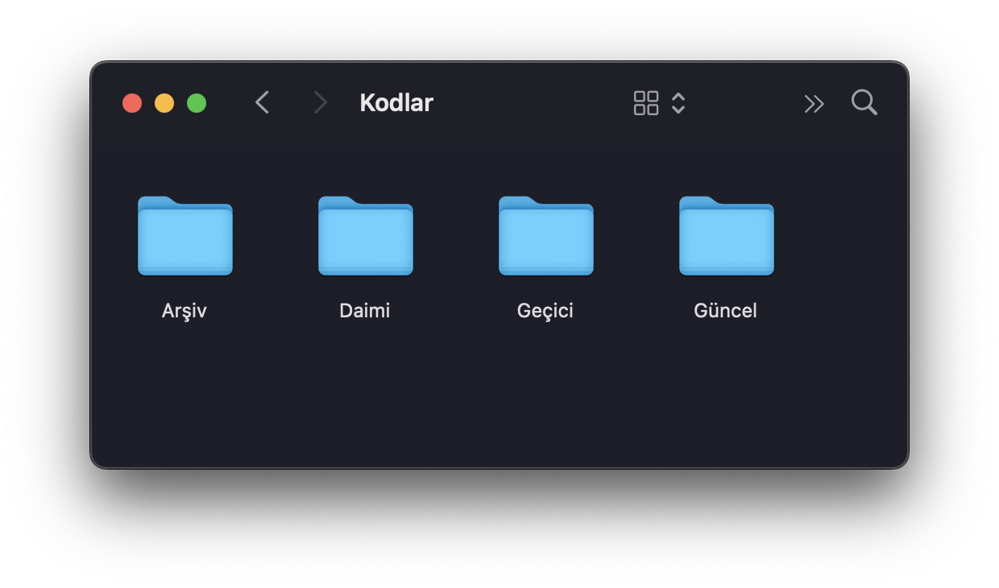

How I Store My Code Repositories on Disk?
If you're using macOS, you might have noticed that folder names shown in the graphical interface don’t always match what you see in the terminal. For example, the folder displayed as "Belgeler" (Documents) in Finder appears as "Documents" when accessed from the terminal. I wanted my folder structure to match this pattern. Specifically, I wanted a folder named "Code" that would appear as "Kodlar" in the graphical interface, just like other system folders. Here’s how it looks now:

When I list the same folder in the terminal, it shows up like this:

On macOS, you can make a folder display a localized name in Finder by appending .localized to its name, creating a .localized subfolder inside it, and placing a tr.strings file inside that subfolder. Let’s go through an example. Suppose you have a folder named Ships and you want Finder to display it as "Gemiler."
First, create the necessary folder structure using the -p flag, which lets you create nested folders in one command:
$ mkdir -p Ships.localized/.localized/
Without the -p flag, you’d need to manually create Ships.localized first, then the .localized folder inside it.
Next, add a line to the tr.strings file inside the .localized folder to specify that "Ships" should appear as "Gemiler":
$ echo '"Ships" = "Gemiler"' > Ships.localized/.localized/tr.strings
After doing this, Finder will display the Ships folder as "Gemiler."
Using this method, I localized my Code folder and organized it into the following subfolders:

Here’s a quick breakdown of the subfolders:
- Daimi (Permanent): Contains repositories I’m actively maintaining, like my blog or the "interneti güzel" project.
- Güncel (Current): Holds whatever project I’m currently working on.
- Arşiv (Archive) and Geçici (Temporary): These are self-explanatory.
If you have other methods for organizing folders or know how to localize folder names without using the .localized extension, feel free to share them in the comments.
Good luck!
11/2022